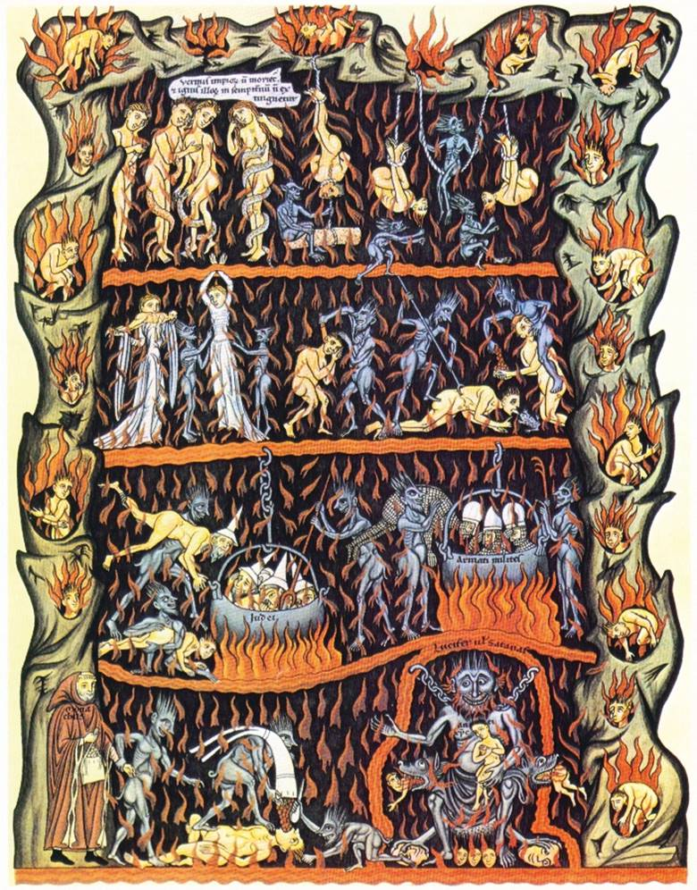

Dehumanization
A fundamental, hallmark tactic for justifying atrocities is to dehumanize the victims. Nazi propaganda referred to Jews as Untermenschen (subhumans) and as rats. Hutus involved in the Rwanda genocide called Tutsis cockroaches. Slave owners considered slaves to be subhuman chattel (Smith 2011). During colonial periods, native populations were frequently referred to as “savages” and exploited accordingly. The “untouchables” of the Hindu caste system have experienced a similar fate. To this day, racial slurs are a staple of racist bigotry. We could go on and on. Such conceptualizations are intended to dehumanize people and are necessary in order to wrongly defend evil actions against them. When the victim is subhuman, when all intrinsic value is stripped from them and they are fully vilified, anything goes—torture, murder, rape, exploitation, merciless hatred, genocide—anything.
Perhaps unsurprisingly, this tactic of dehumanization is center stage in attempting to justify the doctrine of eternal conscious torment.
Consider, for example, the following portrait of the little old lady down the street by Greg Morse (a staff writer for the website Desiring God):
The first consideration is clarifying what sort of creature will be under God’s wrath forever. The little old lady who has shown herself to be a selfless, gentle, patient, forgiving, and amiable neighbor may have a quaint funeral. But the person eulogized is not the person who she truly was nor who she will show herself to be in eternity to come. God has hidden her from us. At death, God repossesses all borrowed virtue, the full torrent of her wicked heart is unleashed. She will be fully given over to her sin (Romans 1:24 , 26 , 28).
The hatred of God, the impatience, the lustful thoughts, the greed, the slander, the viciousness, all will stampede forth. The evil that showed itself in seed form on earth will grow to be forests. The light of common grace will fade from her, and she will be given to the darkness which she so loved (John 3:19). Her full depravity, now exposed, will cause the saints who cared most for her on earth to shudder. Sin, fully enthroned, dehumanizes. (“What Does Hell Say About God? The Truth Many Cannot Bear to Hear.”)
There are several notable tactics of dehumanization utilized in this piece. Notice that he begins by discussing “what sort of creature” will be tormented, implying a subhuman, nonpersonal creature that is astonishingly evil. The “full depravity” of this wicked creature will cause the saints who cared for her to “shudder” in horror. The “selfless, gentle, patient, forgiving and amiable” little old lady, who clearly exhibits multiple fruits of the Spirit during her lifetime (see Galatians 5:22-23) is not only dehumanized, but also demonized. Though we experienced her as selfless and kind and forgiving, this is a God-generated illusion and is “not who she truly was” for “God has hidden her from us.” Her true nature, says the author (who cunningly attempts to invalidate any experiential knowledge of the actual person), is unadulterated wickedness. She is portrayed as if she were a vile demon, an ork, a goblin, a creature so repulsive and disgusting that any punishment could be justified. That thing deserves what it gets. Such is the author’s tactic—straight out of Joseph Goebbel’s propagandist playbook. He even admits to it in his concluding sentence—his picture of the kind old woman “dehumanizes” her.
Besides the fact that such a characterization of this gentle woman should intuitively strike us as disingenuous and contrary to experience, is the fact that it is wholly unscriptural. The author asserts that “at death, God repossesses all borrowed virtue, the full torrent of her wicked heart is unleashed” and that she will become pure, unbridled evil. Where does this idea come from? Although the author purports to support his claim with the Bible by citing verse numbers, a closer examination reveals that he is not interpreting the texts (also known as exegesis) but reading false doctrine into them (also known as eisegesis). To see why, we will carefully examine the texts that he uses as alleged support for his claim. Here they are:
Romans 1:24, 26, 28 (I also included 1:25 and 1:27 that the author omitted)
Therefore God gave them over in the sinful desires of their hearts to sexual impurity for the degrading of their bodies with one another. They exchanged the truth about God for a lie, and worshiped and served created things rather than the Creator—who is forever praised. Amen.
Because of this, God gave them over to shameful lusts. Even their women exchanged natural sexual relations for unnatural ones. In the same way the men also abandoned natural relations with women and were inflamed with lust for one another. Men committed shameful acts with other men, and received in themselves the due penalty for their error.
Furthermore, just as they did not think it worthwhile to retain the knowledge of God, so God gave them over to a depraved mind, so that they do what ought not to be done.
John 3:19
This is the verdict: Light has come into the world, but people loved darkness instead of light because their deeds were evil.
I used bold font for most of the verbs in the passages above to illustrate a simple point. What do you notice about the tense of these verbs?
Astute readers should pick up on the fact that they are all past tense verbs. In short, these are things that have already happened. Paul and John are describing the historical realities of what human beings and societies have already done, and the penalties they have already received. Can these verses be honestly used to support the claim that our little old lady will become a demonic creature at the point of death? Are these verses discussing a post-mortem state at all? Are they about hell? Of course not. It is contextually clear that those ideas are being read into the text, not read out of it.
The point of these verses is to explain the state of humanity historically (and perhaps implicitly presently) as being sinful and choosing wrong actions. I think we are all aware of this, but it certainly should not dehumanize everyone such that we shudder in horror at the sight of them. In fact, the Romans 1 passage is part of a larger rhetorical strategy meant to show those who are judging “sinners” that they too are in the same boat and have no right to be judgmental. Consider Romans 2:1, which immediately and abruptly follows the conclusion of Paul’s clever and purposeful rant about the wickedness of “them.”
Romans 2:1-4
You, therefore, have no excuse, you who pass judgment on someone else, for at whatever point you judge another, you are condemning yourself, because you who pass judgment do the same things. Now we know that God’s judgment against those who do such things is based on truth. So when you, a mere human being, pass judgment on them and yet do the same things, do you think you will escape God’s judgment? Or do you show contempt for the riches of his kindness, forbearance and patience, not realizing that God’s kindness is intended to lead you to repentance?
Paul makes it clear to the self-righteous (who were judging “those sinners over there”) that they are those sinners. The pride and judgment that had been swelling in their hearts is abruptly crushed by the reality that Paul was not condemning other sinners as it appeared, but rather clarifying that all are sinners and that judging others shows contempt for God’s kindness and stores up God’s wrath against the judgmental (Romans 2:5). He also makes it clear that “at whatever point you judge another, you are condemning yourself, because you who pass judgment do the same things.” With this in mind, consider Morse’s judgment of the patient, selfless, kind old woman (aka the demon spawn creature), whose horrifying nature was hidden from us via divine subterfuge. He lists her abominable sins: “the hatred of God, the impatience, the lustful thoughts, the greed, the slander, the viciousness.” Perhaps all of those sins are completely foreign to him. Maybe he has never been impatient, or had lustful thoughts, or greedily desired more than he had. Perhaps he has never been against God or been vicious or slandered anyone (except of course the little old lady of his tale). Or perhaps by judging others so harshly he is showing contempt for the riches of God’s kindness, forbearance and patience, not realizing that God’s kindness is intended to lead him and all of us to repentance, not self-righteous, dehumanizing judgmentalism toward others who have our very same shortcomings and struggles.
It is clear that all of us are, at some point, slaves to sin, and that God has given us over to depraved thoughts and actions. Such a state is never described as permanent, nor is there any evidence that the passages cited above are describing a post-mortem state in which all goodness is removed from people, such that they become unrecognizably vile creatures. In fact, the opposite is true. We find God, in Scripture, redeeming those whom he temporarily allowed to follow their evil desires. In 1 Corinthians 6, for example, after listing an assortment of sins that are strikingly similar to those found in Romans 1, Paul says the following:
1 Corinthians 6:11
And such were some of you. But you were washed, you were sanctified, you were justified in the name of the Lord Jesus Christ and by the Spirit of our God.
It is clear that being given over to our sinful thoughts and desires permanently in hell is not in view at all. The believers Paul is writing to once were slaves to sin but now have been washed, sanctified and justified in Christ and by the Holy Spirit. Thus, being given over to sin is explicitly temporary, a past tense state that is overcome. In fact, in the book of Romans itself, it is clear that the reason God allowed people to follow their own dark paths was so that He could show us all mercy, “for God has consigned all to disobedience, that he may have mercy on all” (Romans 11:32).
So, in reality, none of the verses cited by Morse as supposed evidence that all goodness is stripped from people at the point of death actually support such a claim. The question may be asked, “why not cite some verses that do support his claim?” The answer is simple and telling: no such verses exist. The demonizing dehumanization he describes only exists in his imagination, a failed theodicy for a false doctrine that should not be defended in the first place.
We cannot blame him too much though. It seems to me that the primary reason for creating this myth is that his conscience is still functional and rightly acknowledges that condemning an actual person (as they really are) to such a horrific state as endless torment is morally unacceptable and unjust. So, dehumanization is the only way, in his mind, to retain his hell doctrine without slandering the character of God and maligning Him as unjust and cruel. Those people have to be monsters, valueless creatures, soulless orks. Otherwise, tormenting kind little old ladies forever is just wrong, and he knows it. Dehumanization is the only solution to this quandary.
Like others who defend endless hell, he is backed into a corner and must search for some way to bypass the moral implications of this belief. Since he takes the doctrine of endless hell as a fundamental non-negotiable reality, he believes that he is defending truth, and this is simply the best defense he could muster. The fact that it relies exclusively on dehumanizing myths and not on Scripture, however, should give us pause. Actually, the fact that it uses dehumanization at all, that it uses the same tactic as Nazi propagandists, genocidal killers, and brutal abusers who are intent on justifying atrocities, should be very disturbing to anyone attempting to follow Jesus’ commands to love.
Dehumanizes those who believe it
Not only does the doctrine of endless hell dehumanize those who are assumed to be going there, but also those who cling to the doctrine. To see why, we will examine some primary sources. The first is from a sermon by Charles Spurgeon, entitled Heaven and Hell.
That was a dreadful dream which a pious mother once had, and told to her children. She thought the judgment day was come. The great books were opened. They all stood before God. And Jesus Christ said, "Separate the chaff from the wheat; put the goats on the left hand, and the sheep on the right. The mother dreamed that she and her children were standing just in the middle of the great assembly. And the angel came, and said, "I must take the mother, she is a sheep: she must go to the right hand. The children are goats: they must go on the left." She thought as she went, her children clutched her, and said, "Mother, can we part? Must we be separated?" She then put her arms around them, and seemed to say, "My children, I would, if possible, take you with me." But in a moment the angel touched her; her cheeks were dried, and now, overcoming natural affection, being rendered supernatural and sublime , resigned to God's will, she said, "My children, I taught you well, I trained you up, and you forsook the ways of God; and now all I have to say is, Amen to your condemnation." Thereupon they were snatched away, and she saw them in perpetual torment while she was in heaven. Young man, what will you think, when the last day comes, to hear Christ say, "Depart, ye cursed?" And there will be a voice just behind him, saying, Amen. And, as you inquire whence came the voice, you will find it was your mother. Or, young woman, when thou art cast away into utter darkness, what will you think to hear a voice saying, Amen. And as you look, there sits your father, his lips still moving with the solemn curse. (Spurgeon, Heaven and Hell, 1855 )
It is fascinating that Spurgeon equates “being rendered supernatural and sublime” with “overcoming natural affection.” So, in his view, it is supernatural strength that enables a mother to no longer love or care for her own children! While I agree that such a lack of love might indeed be supernatural, I do not agree with Spurgeon as to the source of such supernatural power. Being heartlessly callous and unloving toward one’s own children, such that a mother is able to look down on her own children in “perpetual torment” while she blissfully experiences heaven’s joys, is supernaturally dark and evil, not light and good. Notice that the mother is actually watching her children in hell (a literal fire of constant torture according to Spurgeon ), and is completely unaffected. Notice the robotic condemnations of parents of their children, cursing them to such a fate without the slightest shred of love toward their own. Is this really the gospel—that we will get to heaven and become uncaring soulless psychopaths ? Lest someone think such a term is too harsh, it is the very definition of a psychopath to have no empathy for others and no qualms of conscience about that lack of empathy.
But many writers have gone further still, claiming that Christians will greatly enjoy watching the sufferings of the damned. Consider the following quotes from defenders of eternal hell from several time periods:
Tertullian (2nd to 3rd Century North African Theologian)
How vast a spectacle then bursts upon the eye! What there excites my admiration? what my derision? Which sight gives me joy? which rouses me to exultation?--as I see so many illustrious monarchs, whose reception into the heavens was publicly announced, groaning now in the lowest darkness with great Jove himself, and those, too, who bore witness of their exultation; governors of provinces, too, who persecuted the Christian name, in fires more fierce than those with which in the days of their pride they raged against the followers of Christ. What world's wise men besides, the very philosophers, in fact, who taught their followers that God had no concern in ought that is sublunary, and were wont to assure them that either they had no souls, or that they would never return to the bodies which at death they had left, now covered with shame before the poor deluded ones, as one fire consumes them! Poets also, trembling not before the judgment-seat of Rhadamanthus or Minos, but of the unexpected Christ! I shall have a better opportunity then of hearing the tragedians, louder-voiced in their own calamity; of viewing the play-actors, much more "dissolute" in the dissolving flame; of looking upon the charioteer, all glowing in his chariot of fire; of beholding the wrestlers, not in their gymnasia, but tossing in the fiery billows; unless even then I shall not care to attend to such ministers of sin, in my eager wish rather to fix a gaze insatiable on those whose fury vented itself against the Lord. (De Spectaculis, Chapter XXX)
Notice Tertullian’s sadistic joy, admiration, and exultation about the idea of watching the pain of others. Notice his insatiable lust for revenge. He just can't ever get enough. He will never be satisfied, fixing his “insatiable gaze" forevermore on the supposed enemies of Jesus. Contrast this with Jesus' own response toward those who crucified Him: “Father, forgive them; for they know not what they do” (Luke 23:34). It doesn't take a PhD to see that the mind of Christ and the mind of Tertullian are completely different here.
Although Tertullian is certainly not representative of the thinking of the early church, his vindictive, cruel mindset dominated in the middle ages when Greek learning was lost to the Western Church, and unfortunately persists even today. Here are just a few examples:
Peter Lombard (12th century author of the Four Books of Sentences, “the most influential book in medieval universities, aside from the Bible itself”)
“Therefore the elect shall go forth…to see the torments of the impious, seeing which they will not be grieved, but will be satiated with joy at the sight of the unutterable calamity of the impious.” (Lombard, Book of Sentences, Book 4:50 as cited by Allin and Parry, page 45)
Thomas Aquinas (extremely influential 13th century theologian)
Wherefore in order that the happiness of the saints may be more delightful to them and that they may render more copious thanks to God for it, they are allowed to see perfectly the sufferings of the damned…
Therefore the blessed in glory will have no pity on the damned. (Summa Theologica, Supplement, Question 94, "Of the Relations of the Saints Towards the Damned")
Samuel Hopkins (influential American minister considered to be a founder of New England Theology)
“This display of the divine character… will be most entertaining to all who love God—will give them the highest and most ineffable pleasure. Should the fire of this eternal punishment cease, it would in a great measure obscure the light of heaven, and put an end to a great part of the happiness and glory of the blessed.” (Hopkins, An Inquiry Concerning the Future State of Those Who Die in Their Sins , Section IV, Sermon 8, 1783, as cited by Allin and Parry, page 45-46)
Jonathan Edwards (influential Puritan minister)
The view of the misery of the damned will double the ardor of the love and gratitude of the saints in heaven…the sight of hell torments will exalt the happiness of the saints forever. (Edwards, The Eternity of Hell's Torments, April, 1739)
Andrew Welwood
He describes the saints as “overjoyed in beholding the vengeance of God,” and their beholding of the smoke of the torment of the wicked as “a passing delectation.” (Welwood, as cited by Farrar, page 112)
Similar notions persist even in modern times:
J.I. Packer (influential modern theologian)
"love and pity for hell's occupants will not enter our hearts." (Packer, "Hell's Final Enigma" in Christianity Today, 2002)
We could continue to examine sadistic, merciless statements of this type ad nauseum (although we perhaps have already reached that point—of generating nausea, that is). But I think we have seen enough for now. The idea that saints will enjoy the suffering of others in hell, that it will bring us unspeakably delightful pleasure to watch their pain, that we should savor their agony like the most decadent chocolate (“a passing delectation”), should sound absolutely outrageous. Are we really to believe that the end result of the Christian life in which we strive to love others (even our enemies as Christ commanded) is to become sadistic psychopaths in heaven—not only uncaring but delighting in the torment of others? Does that sound even a little bit reasonable?
Apparently, to some people it does. Although, I must say, it seems necessary to beat such thinking into them forcefully and against their better judgment. For example, consider the story of how R.C. Sproul became indoctrinated into believing a doctrine that he found “ridiculous.” Around minute 19 of video sermon, entitled Can We Enjoy Heaven Knowing of Loved Ones in Hell?, Sproul recounts angering his mentor John Gerstner during a seminar class in which a student asked:
“Dr. Gerstner, how can I be happy in heaven if I am aware that one of my loved ones is in hell?”
And Gerstner snapped around and looked at this man and he said [aggressively and intimidatingly, it seems to me], “Don’t you know that when you are in heaven, you will be so sanctified that you will be able to see your own mother in hell and rejoice in that, knowing that God’s perfect justice is being carried out?
And while the student who asked that question shrunk back in horror, his face turning white, I burst out laughing. And he looked at me, he says: “What’s so funny?” I said, “excuse me Dr. Gerstner,” I said, “I can’t believe you said what you just said. Nobody talks like that.” And I’m thinking, this guy’s nuts… that I’ll be so sanctified in heaven that I could look into the pit of hell and see my mother there and be glad. I can’t imagine anything more ridiculous than that. But he got my attention. I had to think about it, deeply and often. (Sproul, Can We Enjoy Heaven Knowing of Loved Ones in Hell? 2013)
It seems that young Sproul had good instincts. He recognized the absurdity of Gerstner’s claim and couldn’t “imagine anything more ridiculous” than rejoicing about watching his mother burn in hell. But being mentored by Gerstner and force-fed a steady diet of this theology gradually took its toll—he becomes the very guy that he thought was “nuts.” It is noteworthy, however, that this shift in thinking only comes about as a result of him continually kicking against the goads of his conscience. Around minute 42 of this same video, Sproul says the following:
"…if it means that my friends, if it means my family must be sacrificed for the righteousness of God, for the manifestation of his holiness, for the glory of his righteousness, though I can't stomach the thought of it now, this word tells me that the day will come where I will be so concerned about the glory of God and of Jesus that I will be able to rejoice in his judgment. We're not there yet folks, but that is our destiny.” (Sproul, Can We Enjoy Heaven Knowing of Loved Ones in Hell? 2013)
Notice that he can’t stomach the sickening thought of sacrificing his family and friends to the flames of everlasting hell to appease a wrathful deity. Perhaps there is a reason for his continued disgust about his own views, despite his best efforts to force himself to believe them. The imagery he uses should sound familiar. It is said that in the worship of Molech parents would place their infant children onto the red-hot hands of the idol to burn them alive as a sacrifice to appease this angry god. All the while, musicians would loudly beat drums to drown out the tortured shrieks of pain of these children. They would beat the drums not only to silence the cries of anguish but also the pangs of conscience. I would submit to you that the reason for Sproul’s revulsion was that he had a conscience—that the still small voice of the Holy Spirit was still working against the cacophonus bluster of an incoherent religious tradition that bears more similarities to the worship of Molech than to the God of love revealed by Jesus Christ.
Despite spending a lifetime working so hard to dehumanize himself and divorce his theology from his conscience, Sproul admits that he has not been successful: “We're not there yet folks, but that is our destiny.” I cannot help but be reminded of Darth Vader’s attempt to persuade Luke Skywalker to come over to the dark side. “It is your destiny,” he urged, in his deep, gravelly voice. Fortunately, Luke resisted a dark destiny and we should as well, especially since we have no biblical warrant for believing that the destiny of the Christian life could possibly be sadism. Such a destiny is diametrically opposed to the compassionate character traits we are trying to develop in this life. How could the end result of following Christ, the very model of self-sacrificial love, forgiveness, and compassion, be a complete lack of all these traits?
So, I refuse to beat the drums.
The arguments for doing so are unbiblical and incoherent. Consider the following (also from the same video):
"Until our glorification, our concerns and our sympathies rest much more with wicked human beings than they do for the glory of God and for the exaltation of Christ, and what Gerstner was trying to communicate to me that day in the classroom, which I thought was so absurd, was that once sin is removed from my life and once I get to that state where I love the Lord my God with all of my heart and all of my soul in undiluted affection, my compassion, my love, my concern will be much more for the vindication of God's holiness than it will be for a corrupt fallen kinsman of mine according to the flesh... that's so hard to imagine because what is so hard for you to imagine and so hard for me to imagine is to be free of sin. You know, I hate the doctrine of hell, in many ways. I can't stand the thought of anybody being in hell, even Hitler, because I am so Hitler-esque…" (Sproul, Can We Enjoy Heaven Knowing of Loved Ones in Hell? 2013, beginning around minute 39)
Does caring for other people remind you of Hitler? Me neither.
Affection, compassion, love, and concern for others are not Hitler-esque traits; delighting in their suffering is. That Sproul hates the doctrine of hell and that he “can’t stand the thought of anybody being in hell” are due to his compassion toward fellow human beings, a Christ-like characteristic, not a Hitler-esque characteristic. This should be glaringly obvious.
But besides the incoherency of his last statement is the fact that loving God is inseparable from loving other people. As Jesus said in Matthew 22:37-40 (NKJV):
“‘You shall love the Lord your God with all your heart, with all your soul, and with all your mind.’ This is the first and great commandment. And the second is like it: ‘You shall love your neighbor as yourself.’ On these two commandments hang all the Law and the Prophets.”
We do not love God more by loving people less. The exact opposite is true. The second commandment is like the first. They are tied together such that people cannot love God with all of their hearts, souls, and minds unless they love others as well. The apostle John stated this truth as follows:
1 John 4:7-21 NKJV
Beloved, let us love one another, for love is of God; and everyone who loves is born of God and knows God. He who does not love does not know God, for God is love. In this the love of God was manifested toward us, that God has sent His only begotten Son into the world, that we might live through Him. In this is love, not that we loved God, but that He loved us and sent His Son to be the propitiation for our sins. Beloved, if God so loved us, we also ought to love one another. No one has seen God at any time. If we love one another, God abides in us, and His love has been perfected in us. By this we know that we abide in Him, and He in us, because He has given us of His Spirit. And we have seen and testify that the Father has sent the Son as Savior of the world. Whoever confesses that Jesus is the Son of God, God abides in him, and he in God. And we have known and believed the love that God has for us. God is love, and he who abides in love abides in God, and God in him. Love has been perfected among us in this: that we may have boldness in the day of judgment; because as He is, so are we in this world. There is no fear in love; but perfect love casts out fear, because fear involves torment. But he who fears has not been made perfect in love. We love Him because He first loved us. If someone says, “I love God,” and hates his brother, he is a liar; for he who does not love his brother whom he has seen, how can he love God whom he has not seen? And this commandment we have from Him: that he who loves God must love his brother also.
The love of other people is inseparable from the love of God. In fact, John states that someone who claims to love God but does not love others is a liar! You simply cannot love God without loving other people. How does this biblical thinking compare to the ideas expressed above that we will take pleasure in watching our children, our brothers, our sisters, our parents, and many others burning forever in eternal conscious torment? Do we love our brother while we mercilessly rejoice in his unending suffering? And if we do not love our brothers and others whom we have seen, how can we love God whom we have not? John’s answer is simple: we can’t. The doctrine of endless torment is dehumanizing to believers because it attempts to force us to accept a destiny in which we will become inhumane, cruel, and unloving toward others.
Human Dignity
In contrast to the dehumanizing rhetoric of endless hell proponents, we find a biblical picture that gives great dignity to human beings. The Bible repeatedly teaches that people are made in the image and likeness of God (Genesis 1:26-31, Genesis 5:1-2, Genesis 9:6, James 3:9, 1 Corinthians 11:7). In fact, it is only after the creation of people in Genesis 1 that God declares that what He had made was very good. Before the creation of humans, things were good but not yet very good. We are the crown and climax of God’s work, made in His image and likeness.
Consider Psalm 8:4-5 (NKJV):
What is man that You are mindful of him, And the son of man that You visit him? For You have made him a little lower than the angels, And You have crowned him with glory and honor.
Notice that the psalmist describes people as just slightly lower than angels and as crowned with glory and honor. This concept is repeated in Hebrews 2:7 (where the Psalm is quoted), showing that this understanding of humanity is consistent in both the New and Old Testaments. We are not worthless, despicable creatures as many have argued in an attempt to justify the doctrine of hell.
Instead, we are precious to God, His most intricate handiwork:
Psalms 139:13-15 (NKJV)
For You formed my inward parts; You covered me in my mother’s womb. I will praise You, for I am fearfully and wonderfully made; Marvelous are Your works, And that my soul knows very well. My frame was not hidden from You, When I was made in secret, and skillfully wrought in the lowest parts of the earth.
Notice the skill and care with which God makes people. Are we to suppose that God fearfully and wonderfully makes people but then tosses these same people, like worthless trash, into endless hell for not understanding the gospel in their short lifetimes? Life is confusing, with competing philosophies and pressures, unclear information, and heartbreaking suffering. Add to this the glaring hypocrisy of some who claim the name of Christ and yet commit or defend atrocities. Is it any wonder that people are not always sure of the gospel? Will God really see a kind, selfless woman who doubted as subhuman garbage and torture her for all of eternity? Or does He love the works of His hands and continue to pursue her as His beloved child?
We Are All God’s Children
It is noteworthy that the Bible clearly makes the connection between God creating us, skillfully weaving us together in our mother’s wombs, and being our good Father.
Malachi 2:10 (ESV)
Have we not all one Father? Has not one God created us? Why then are we faithless to one another, profaning the covenant of our fathers?
Notice that Malachi is speaking of faithless, profane people but claiming God’s fatherhood over such people, even those who are not walking in His ways. Even if we are faithless, he is still our Father, for He is the Father of all of humanity.
Acts 17:26-29
From one man he made all the nations, that they should inhabit the whole earth; and he marked out their appointed times in history and the boundaries of their lands. God did this so that they would seek him and perhaps reach out for him and find him, though he is not far from any one of us. ‘For in him we live and move and have our being.’ As some of your own poets have said, ‘We are his offspring.’
Therefore since we are God’s offspring, we should not think that the divine being is like gold or silver or stone—an image made by human design and skill.
In context, Paul is addressing a crown of pagan Athenians. Notice that he confirms that we are his offspring, including himself and all of the Athenians as God’s children in whom “we live and move and have our being.” He expresses the solidarity of all mankind as God’s children, even if we have strayed and do not believe the truth. Remember, the crowd was not Christian. It was not Jewish. He was speaking to idol-worshipping Greeks who had never heard the gospel and confirming that they too are God’s offspring and that He is not far from anyone.
He makes a similar claim in Ephesians 4:6, stating that there is “one God and Father of all, who is over all and through all and in all.” In like manner, 1 Corinthians 8:6 states that “there is one God, the Father, from whom are all things and for whom we exist, and one Lord, Jesus Christ, through whom are all things and through whom we exist.” Notice that God is the Father of all and that all come from Him. It is important, however, to notice that He is not an absentee Father who creates us and then abandons us, but rather that He is also “over all and through all and in all.” This confirms Paul’s assertion that the Father is “not far from any one of us.” Instead, He is working in and through everyone, not giving up on any lost child but rather seeking each one until He finds him or her.
This universal Fatherhood of God is why Jesus was able to teach the non-Christian crowds in Matthew 6 to pray to “our Father in heaven.” Remember, there was no such thing as Christianity when He taught this prayer. Not even His disciples knew who He was. So, although the crowds were listening to Him, they certainly had no concept that He was their Lord and Savior. How many of them later shouted “crucify Him,” we will never know. Yet, He teaches all of us to pray to our Father, the loving, good Father of all.
All of us are God’s offspring, His dearly loved children. Is it even possible for a good Father to abandon even one of His children to endless misery and then ask His other children to rejoice in their unceasing torture? I think not. Instead of dehumanizing other children of God, we should “honor all people,” as 1 Peter 2:17 teaches, because God has made us in His image and likeness, clothed us in honor and glory, and called us His children (even when we have strayed).
How Did We Get Here?
Considering the contrast between the biblical picture of humanity and the dehumanizing statements of those who are defending eternal conscious torment seems to raise the question of how we got so far from truth. I think one of the key reasons is that the traditions of men die hard. They are passed on in ignorance from one generation to the next and accepted uncritically, no matter how absurd. This is especially the case if the tradition is enforced with threats of earthly death and torture, plus eternal damnation, as has historically been the case with the doctrine of hell. But the tradition of eternal torment is not actually Christian at all; instead, it was appropriated from surrounding cultures who already had these types of myths. Unfortunately, many Christians are still captivated by the oppressive, ignorant traditions of the Dark ages. Consider the following 12th century painting by the Alsatian nun and abbess, Herrad of Landsberg: 
Medieval illustration of Hell in the Hortus deliciarum manuscript of Herrad of Landsberg (about 1180). Retrieved from Wikipedia.
{kind=link}
Pretty disturbing stuff. We might as well admit that if a child drew something similar, he or she would be referred to psychological counseling, because something's clearly wrong with that kid. Yet, here we have a Christian leader (the head of the rest of the nuns in her abbey), painting this sick-minded junk. And she is not even close to alone in such perverse imaginings—similar nonsense pervades medieval art and literature, and persists in popular imagination even still.
At any rate, there is much that could be said about the painting, but there is one detail that is really striking and worth pointing out. Look at the faces of Satan and the demons. What do you notice?
Did you see that they are smiling, having a grand time inflicting horrific tortures on people? They are all happy in hell.
And they are in control.
Why do I bring this up? Well, it seems that in the Bible one of the key desires of demons and Satan is to control people and to be worshipped. When Satan tried to tempt Jesus, he tried to influence him to worship and glorify him, and when demons possessed people, they controlled them. Spiritual darkness loves domineering power. With this in mind, who might be behind a doctrine that gives the forces of spiritual darkness unquestioned dominance over human beings created in God’s image? I think Paul gives us the answer:
1 Timothy 4:1-2 (NKJV)
Now the Spirit expressly says that in latter times some will depart from the faith, giving heed to deceiving spirits and doctrines of demons, speaking lies in hypocrisy, having their own conscience seared with a hot iron…
I want to pause now and consider one specific characteristic Paul mentions in those who are giving heed to deceiving spirits and doctrines of demons: a seared conscience. This means that the conscience is no longer functioning properly, having been numbed through cauterization such that it is unable to feel and discern right and wrong. Now, consider the dehumanization and demonization of poor, old Gladys to defend her endless torture. Ponder the stoic, unfeeling parental damnations of their children to being burnt alive for all of eternity. Think on the expressions of utter delight and joy expressed by theologians who are eagerly anticipating gazing on the excruciating sufferings of others with no pity or compassion for them. Contemplate the repeated citing of Bible verse numbers that, upon further inspection, do not say what the authors are forcefully claiming.
Consider also the hypocrisy of mercilessly condemning others for the very sins that we too commit and the dishonesty of representing others as subhuman creatures. For either God or Greg Morse must be deceiving us as to the nature of old Gladys—God, by hiding her true nature from us as Morse claims, or Morse by claiming that He does. I personally lean toward Morse’s claim being wrong rather than attribute such deception to God.
Speaking lies in hypocrisy, having a seared conscience…
Draw your own conclusions.
In contrast, Paul encourages us to “reject profane and old wives’ fables, and exercise yourself toward godliness (1 Timothy 4:7) and to be “nourished in the words of faith and of the good doctrine which you have carefully followed” (1 Timothy 4:6). So, we see that Paul is distinguishing demonic doctrine from good doctrine here. The doctrines of demons are profane old wives’ fables. I imagine a hellish playground in which demons joyfully dismember, boil, and creatively torture people qualifies for the “profane old wives’ fables” label. In context, good doctrine that leads to profitable godliness includes the following:
1 Timothy 4:9-11
This is a faithful saying and worthy of all acceptance. For to this end we both labor and suffer reproach, because we trust in the living God, who is the Savior of all men, especially of those who believe. These things command and teach.
It is fascinating to me that 1 Timothy 4 exhorts us to command and teach that God is the Savior of all men, yet endless hell proponents say that this is heresy. Meanwhile, they cling to unbiblical myths that dehumanize and degrade people, to sadistic fantasies about relishing the suffering of the damned, and to an insistence that we must violate conscience and reason to be faithful to God. Such ploys are necessary strategies for calling the evil good and the good evil, for searing the conscience, cauterizing it so that it can no longer discern the difference.
But these ideas are harmful and wrong. It is time to recognize them for what they are. This is not an attack on the church nor even on the people who have written such ideas. It is a call to reject that which is evil and cling to that which is good (Romans 12:9). I bet that Greg Morse is actually a nice guy who genuinely cares for people. Most people who claim to be Christians are kind-hearted and do care. But they often mistakenly believe that defending endless hell is necessary to defend biblical truth. In doing so, however, they create defenses that are neither biblical nor true. And in doing so, the church and the world suffer, the light of the gospel is dimmed, and people made in God’s image are dehumanized. This should not be so. Instead, we should be free from dark myths that dehumanize people and that restrict our ability to truly love others as Christ commanded. We must be free to share the love of the Savior of all people (a love that always perseveres and never, ever fails) with all people. But to experience this freedom, the church must reject the deeply incoherent tradition of endless hell that has enslaved us and obscured the true light of the gospel. It is not the cessation of eternal punishment that would “obscure the light of heaven” as Samuel Hopkins claimed, but rather the wretchedness of said doctrine that obscures the light of heaven from reaching a dark world that needs the light of God’s love.
Previous Chapter
Next Chapter
Citations and Notes
Allin, Thomas and Parry, Robin. Christ Triumphant: Universalism Asserted as the Hope of the Gospel on the Authority of Reason, the Fathers, and Holy Scripture . Wipf & Stock Publishers, 2015. Google Books Link.
Aquinas, Thomas. “The Summa Theologica.” Summa Theologica, Benziger Bros. Edition, 1947. Translated by Fathers of the English Dominican Province, https://dhspriory.org/thomas/summa/XP/XP094.html#XPQ94OUTP1 . Accessed 11/10/2019.
Edwards, Jonathan. “The Eternity of Hell's Torments by Jonathan Edwards (1703-1758).” The Eternity of Hell's Torments -- Jonathan Edwards, http://www.biblebb.com/files/edwards/eternity.htm . The sermon is dated April, 1739. Accessed on 11/26/2019.
Farrar, Frederic W. Mercy and Judgment: A Few Last Words On Christian Eschatology With Reference to Dr. Pusey's, "What Is Of Faith?" . London Macmillan and Co., Limited New York : The Macmillan Company, 1904 (first published in 1881), http://www.tentmaker.org/books/ mercyandjudgment/ mercy_and_judgment_ch4.html
Note: The section referenced is from Chapter 4: Was There Not a Cause?
Here also is a digital copy of the printed version from Google Books: link
Hopkins, Samuel, et al. The Works of Samuel Hopkins, D.D. ... Vol. 2, Doctrinal Tract and Book Society, 1852, https://play.google.com/books/reader?id=YStEqV7Ae48C&hl=en&pg=GBS.PA459 . Note: you can look here to see Samuel Hopkins’ sermon in its entirety.
Lombard, Peter. The Sentences: Book 4. Translated by Giulio Silano, Pontifical Institute of Mediaeval Studies, 2010. Note: The following link will take you directly to an alternative translation of Sentence 50 (the meaning is identical to Allin’s translation as cited in the main body of this chapter): https://books.google.com/books?id=mh4oAQAAMAAJ&focus=searchwithinvolume&q=calamity
Morse, Greg. “What Does Hell Say About God? The Truth Many Cannot Bear to Hear.” Desiring God, 28 Oct. 2019, https://www.desiringgod.org/articles/what-does-hell-say-about-god.
Packer, J. I. “Hell's Final Enigma.” ChristianityToday.com, Christianity Today, 18 Feb. 2014, https://www.christianitytoday.com/ct/2002/april22/27.84.html . Originally published on April 22, 2002. Accessed 11/26/2019.
Smith, David Livingstone. “'Less Than Human': The Psychology Of Cruelty.” NPR, NPR, 29 Mar. 2011, https://www.npr.org/2011/03/29/134956180/criminals-see-their-victims-as-less-than-human
Spurgeon, Charles Haddon. “Heaven and Hell.” The Spurgeon Center, 4 Sept. 1855, https://www.spurgeon.org/resource-library/sermons/heaven-and-hell#flipbook/. (Sermon No. 39-40, New Park Street Pulpit Volume 1 )
Sproul, R.C. “Can We Enjoy Heaven Knowing of Loved Ones in Hell?” YouTube, Ligonier Ministries, https://www.youtube.com/watch?v=D00_sM-rTCQ&feature=youtu.be.
Tertullian. De Spectaculis (The Shows). Translated by S. Thelwall, http://www.tertullian.org/anf/anf03/anf03-09.htm#P1011_411386
Note: There is another translation of De Spectaculis that reads more smoothly in English that I originally found on tentmaker.org. Since it was difficult to find the translator, I used the translation cited above. I eventually found a source with a very similar translation from the 18th century British historian Edward Gibbon. You can see it for yourself here.